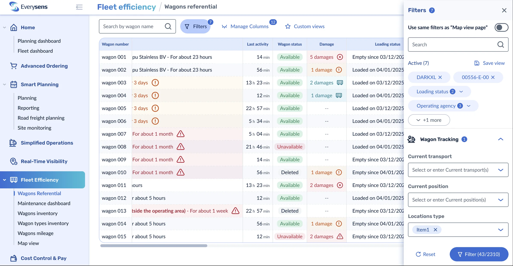
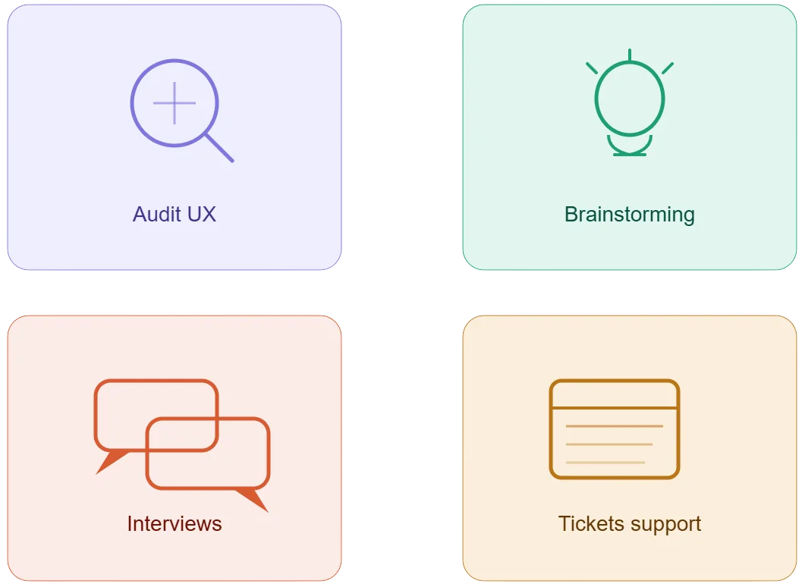
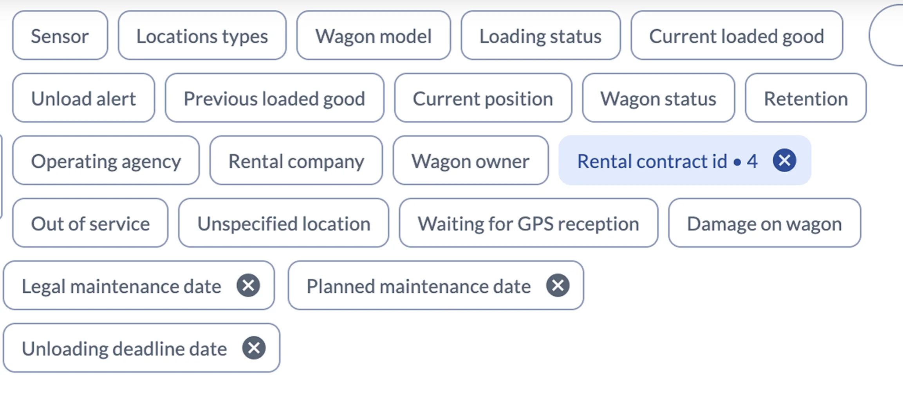
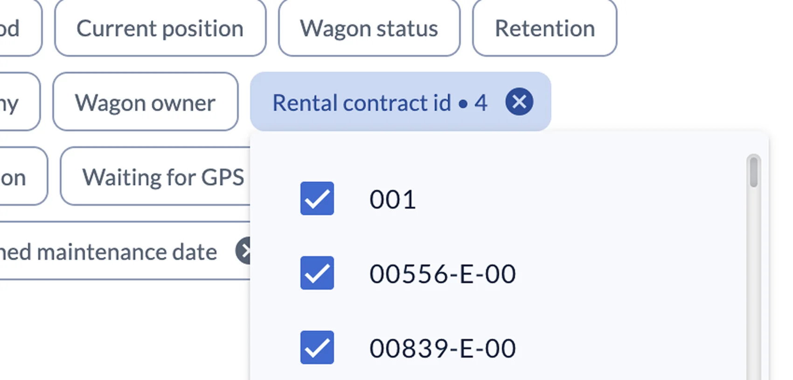
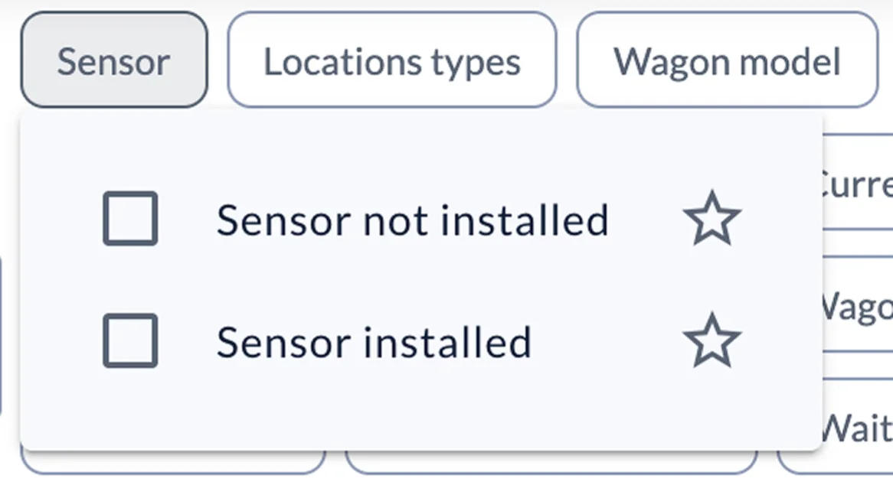
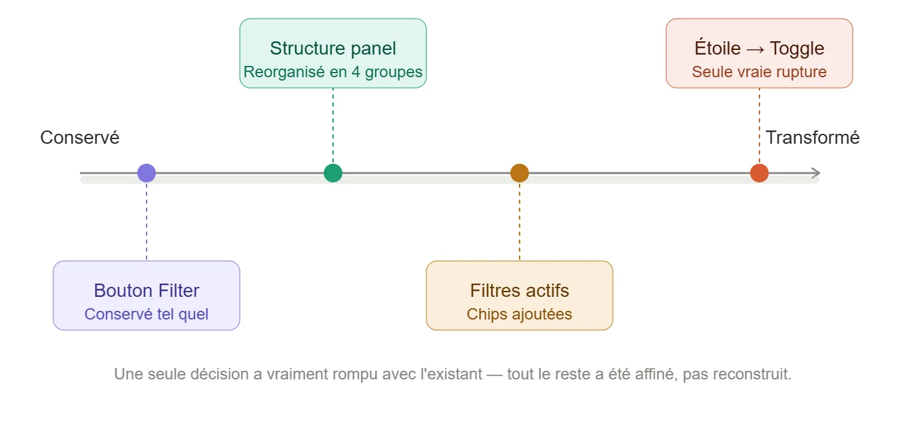
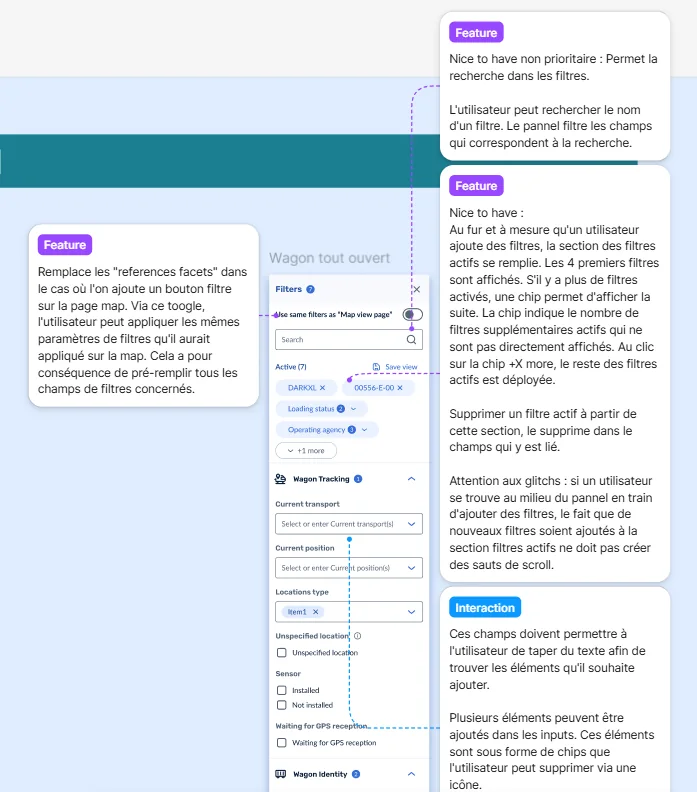

Panel de filtres
Rendre la synchronisation des filtres entre deux pages intuitive et concevoir un système de filtres clair et actionnable.

Role
Product designer
Tools
Figma
Team
Toute seule
Time
2 semaines
Everysens
Une entreprise spécialisée dans la digitalisation et le pilotage du fret ferroviaire.
Elle développe des solutions technologiques permettant aux industriels et logisticiens d’optimiser, suivre et sécuriser le transport de marchandises par rail.
Contexte
Produit B2B de gestion de wagons avec deux vues : List (tableau) et Map (géolocalisation).
En tant que Product Designer, j’ai mené la refonte complète du système de filtres, de l’audit UX au prototype final.
Problématique
Comment repenser un système de filtres complexe sur un produit B2B dense, et rendre la synchronisation entre la page List et la page Map si visible que l'utilisateur comprend toujours ce qui s'applique, sans que personne n'ait besoin de l'expliquer ?
Contraintes
Les filtres appliqués sur la List impactent automatiquement la Map, sans que cela soit visible ou compréhensible pour l’utilisateur.
Cette fonctionnalité devait être conservée, malgré son incompréhension.
Habitudes des utilisateurs déjà installées.
Le produit traite une forte volumétrie de données.
-> Rendre le système compréhensible sans en changer le fonctionnement
LONG STORY SHORT
J'ai repensé entièrement le système de filtres d'un outil B2B de gestion de wagons, en rendant visible ce que personne ne voyait.
Plusieurs accomplissements clés :
De l'audit jusqu'au handoff
j'ai piloté ce projet seule, de la définition du problème à la solution finale
Un problème, une solution
J'ai identifié 4 problèmes distincts et conçu une réponse précise pour chacun — en documentant les options écartées autant que les choix retenus.
Pragmatisme by design
Ancré dans la réalité Budget, contraintes techniques, décisions business — chaque choix de design a été pensé pour être livrable, pas juste beau sur Figma
Analyse de l’existant & recherche utilisateur
Pour détecter les problèmes et comprendre les utilisateurs, j’ai combiné plusieurs méthodes :
Audit du panel existant
Brainstorming avec une autre Product Designer
Interviews avec les équipes en contact avec les clients
Analyse des tickets support

Problèmes détectés

Filtres listés à plat, sans hiérarchie ni regroupement

Les filtres appliqués ne sont pas visibles

L’étoile transfère les filtres de la List vers la Map, mais l’utilisateur ne voit pas les filtres activés sur la Map et ne sait pas ce que fait l’étoile

Approche
Conserver les habitudes des utilisateurs et la logique du produit (List → Map)
Prioriser les frictions détectées pour les traiter par impact et fréquence
Explorer des solutions incrémentales et visibles, sans surcharger l’interface
Tenir compte des contraintes techniques : performance et volumétrie de données
Solutions
Panel structuré
Filtres regroupés par thématique métier et organisés par usage → navigation plus claire et rapide.Filtres actifs visibles
Chips en haut du panel avec compteur global → l’utilisateur sait immédiatement ce qui est filtré.Lien List → Map explicite
Toggle clair à la place de l’étoile : “Use same filters as Map/List view page”
→ les filtres activés sont visibles et l’utilisateur comprend l’effet de son action.

création des annotations pour détailler les comportements et faciliter l’implémentation côté développeurs.
🚀 Next Steps
Tests utilisateurs du toggle pour valider la compréhension et la visibilité des filtres List → Map
Itérations sur le texte contextuel pour rendre le lien List → Map encore plus clair
Suivi des tickets support pour vérifier si la confusion diminue
Analyse des performances sur des volumes de données plus importants pour garantir la fluidité